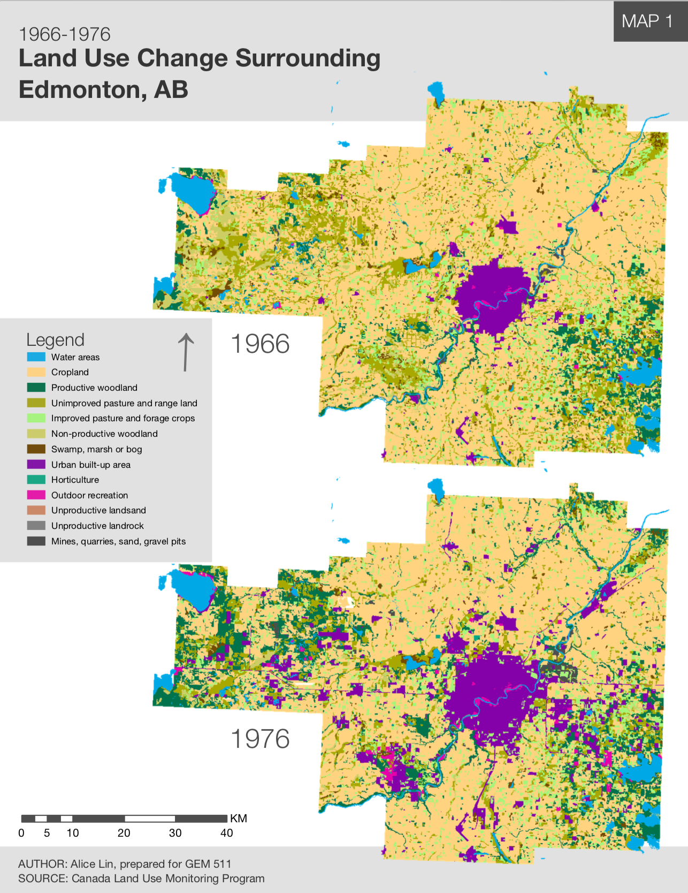
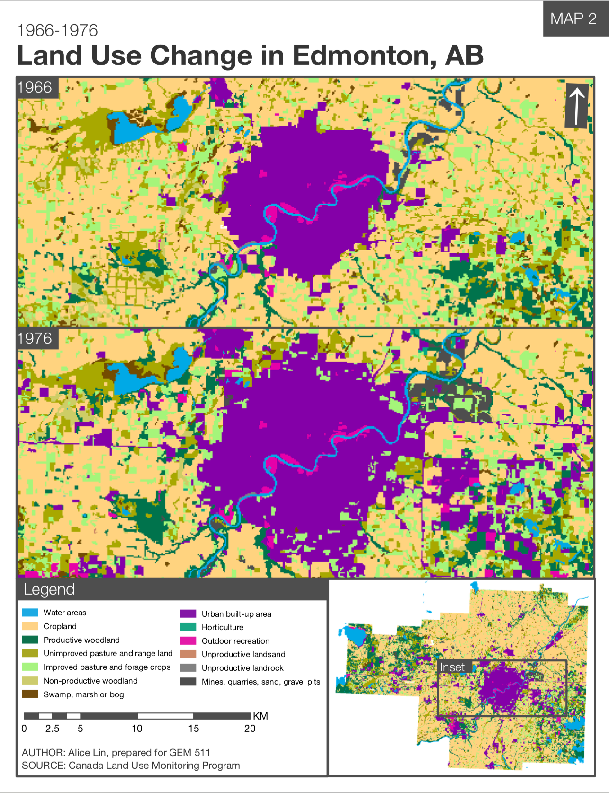
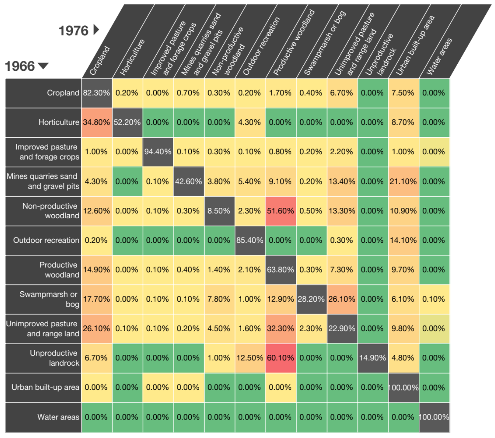

Land Use Change in Edmonton, AB
May 7, 2020I conducted a land use change analysis for the area surrounding Edmonton, AB between 1966 and 1976 for my advanced GIS course. This involved using classified imagery and generating landscape metrics in Fragstats. Exerpts and figures from the report are below.
Executive Summary: Urbanization and population growth have left impacts on the landscape surrounding Edmonton, AB. The urban built-up areas around the city increased from 19,596 ha to 54,995 ha between 1966 and 1976, translating to a doubling of the proportion of the land it previously occupied. This was accompanied by a conversion from other land use types, both natural and manmade. Land use types that experienced significant declines include wetlands, nonproductive woodland, and unimproved pastures and rangelands. The resulting landscape has a changed composition with land use patches that are less complex in shape.


Transition matrix for different land cover classes: 
Interactive sankey diagram showing land use transitions: